遊びで植物を育てよう
2024/05/26
ニラを食べるのはめんどくさいな。

ニラを収穫しました。
洗って、刻んで、冷凍保存するんですが、手間がかかる割に量がかさばらないので少しなんですよね。
割が悪いな。
【ニラTOP】
【野菜TOP】
【園芸TOP】
2023/10/11
ニラの干し野菜が上手く出来ませんでした。
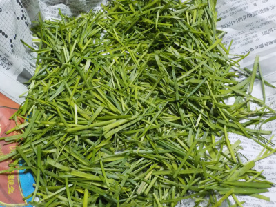
天気がいいのでカラカラに乾燥するかなと思ったんですが、駄目でした。
10月の気温だと難しかったようです。
【ニラTOP】
【野菜TOP】
【園芸TOP】
2023/07/24
ニラを刻んで冷凍しました。
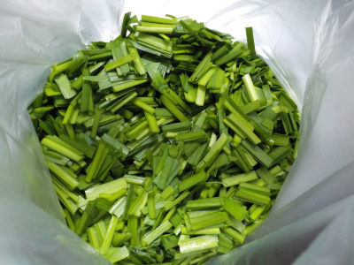
ニラ畑が雑草だらけになっていたので、草抜きをしました。
ついでにニラを収獲したんですが、沢山なので冷凍保存しました。
【ニラTOP】
【野菜TOP】
【園芸TOP】
2023/04/09
ニラが大きくなったので収獲しました。

春になって育った若い葉っぱを収獲して食べました。
まだ風味が少なかったです。もうちょっと置いておいた方が良さそうです。
【ニラTOP】
【野菜TOP】
【園芸TOP】
2022/09/18
ニラの花畑です。
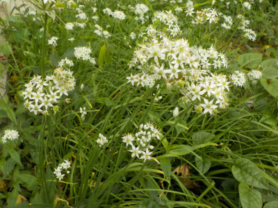
沢山咲きました。
種はいらないので花を見終わったら取ろうと思っていますが、面倒だなー。
でも面倒とか言ってたら何も出来ないので、ちょっとづつやろうと思います。
【ニラTOP】
【野菜TOP】
【園芸TOP】
2022/09/04
もうすぐニラの花が咲きます。
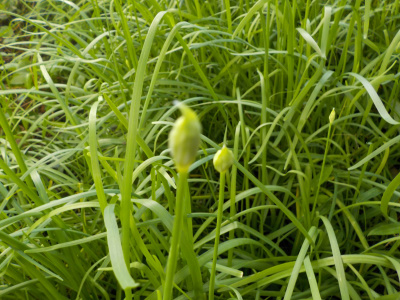
近ごろは収獲が面倒なので何もしていません。
なので沢山の花が咲く予定です。花を見て楽しもうと思っています。
【ニラTOP】 【野菜TOP】 【園芸TOP】
2021/08/21
ニラを収獲して食べています。
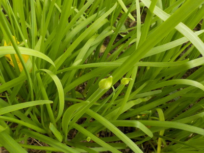
花芽が出来ましたが、まだ若いので簡単にちぎって取れます。
花が咲く前にドンドン食べてしまおうと思い、毎日ニラを食べています。
いろいろ料理してますが、美味しいですね。
【ニラTOP】 【野菜TOP】 【園芸TOP】
2021/04/18
ニラが大きくなったので食べることにしました。
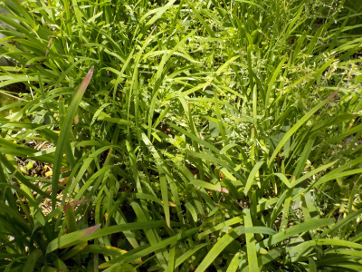
他に食べないといけない野菜が沢山あったのでニラは無視していましたが、だいぶ大きくなったじ雑草が生えてきたので少しずつ収獲して食べることにしました。
同じ場所に植えっぱなしですが、すくすく育ちますね。
【ニラTOP】 【野菜TOP】 【園芸TOP】
2020/11/23
ニラが黄色くなりました。
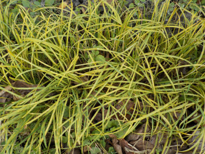
全部が黄色くなったわけではないですが、このエリア付近は黄色くなりました。
もう食べれませんね。
寒くなって枯れただけかな。
【ニラTOP】 【野菜TOP】 【園芸TOP】
2019/09/14
ニラの花畑完成です。
夏野菜ばかり食べていたので、近頃ニラは食べていませんでした。
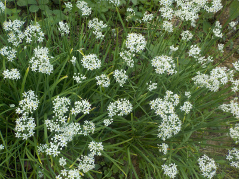
のびのび育って沢山の花が咲きました。
まだ夏野菜があるのでニラはこのまま花を観賞します。
【ニラTOP】
【野菜TOP】
【園芸TOP】
2019/02/23
ニラのまわりの草抜きをしました。
ニラも雑草も伸びてきたので、雑草を抜いて土寄せしました。
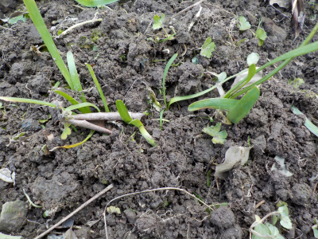
草を抜いて土がいっぱい見えると畑って感じがしますね。
光をいっぱい浴びて大きくなって欲しいです。
【ニラTOP】
【野菜TOP】
【園芸TOP】
2018/11/18
今年もニラの種を採りました。
種をまくつもりはないんですが、出来てるのでなんとなく収穫しました。
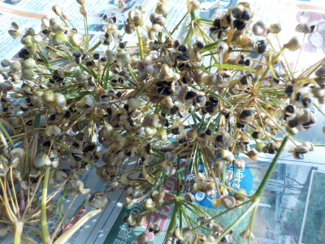
他の野菜の虫除け用に植えようかな？
【ニラTOP】
【野菜TOP】
【園芸TOP】
2018/09/23
ニラの成長が速いです。
つぼみが出来たので一度収穫しましたが、再度つぼみが出来、花が咲きました。
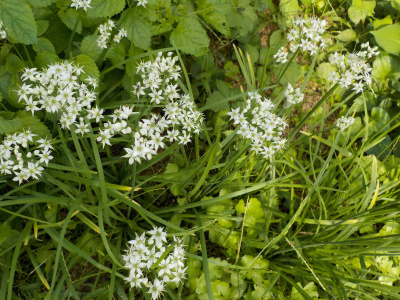
綺麗に咲いてる所は観賞用に放置することにしました。
【ニラTOP】
【野菜TOP】
【園芸TOP】
2018/09/02
ニラから花芽が出だしました。
花が咲きそうなので、まとめて収穫しました。
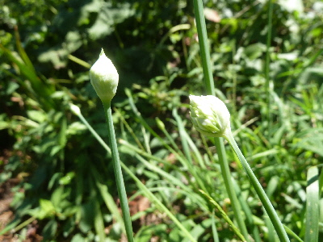
暑い時期は成長していなかったので、久しぶりの収穫でした。
【ニラTOP】
【野菜TOP】
【園芸TOP】
2018/04/14
ニラを収穫しました。
収穫できる大きさになりました。

収穫するときにニラの香りがするんですが、あまりしませんでした。
今の時期はそんなものかな。
【ニラTOP】
【野菜TOP】
【園芸TOP】
2018/03/18
ニラ畑を1ｍ作りました。
ニラを株分けして畑を増やしました。
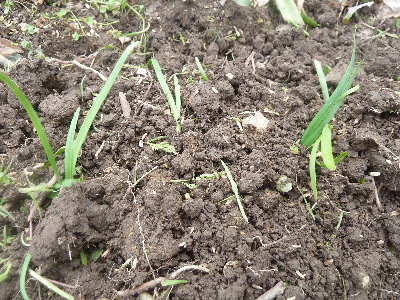
今回は1ｍですが、この冬ニラ畑の面積は倍増したので沢山収穫出来そうです。
ニラ料理を勉強しないと飽きるかも。
【ニラTOP】
【野菜TOP】
【園芸TOP】
2018/02/04
ニラが見えなくなりました。
ここらへんにニラが植えてあります。

雑草は見えるんですが、ニラは分からなくなりました。
冬だな。
【ニラTOP】
【野菜TOP】
【園芸TOP】
2017/08/26
ニラの蕾が出来ていました。
2017/05/20
種からのニラはひょろひょろです。
2017/04/08
ニラを収穫しました。
2017/03/12
ニラの土寄せをしました。
2017/02/18
ニラの株分けをしました。
【ニラTOP】
【野菜TOP】
【園芸TOP】
畑仕事じゃないよ。
【おいしいものを食べよう。】【しっかり寝よう。】
【ソロ活をしよう!】【季節感のあることをしよう。】【動画視聴はほどほどに。】【当サイトの全てのコンテンツは無断転載禁止です。】